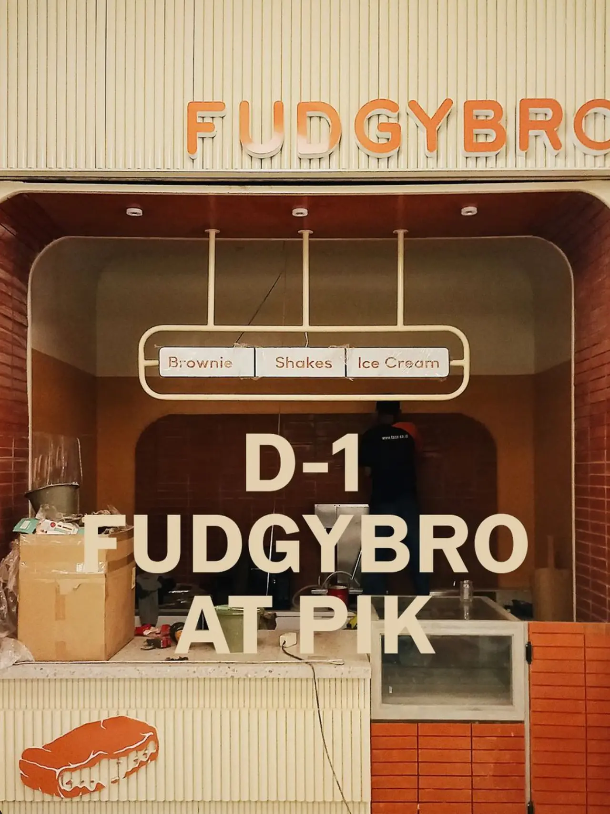

Diary Fimela: Booming Dimana-mana, Ternyata Bukan Hanya Cookie Bomb
Beberapa waktu belakangan ini, salah satu hidangan penutup yang mendunia adalah cookie bom. Di mana makanan ini viral di media sosial, sampai-sampai orang-orang rela mengantri berjam-jam untuk merasakan kenikmatan dan kelezatan yang ditawarkannya.
Nah, Sahabat FIMELA cookie bom ini pertama kali ada dan mulai di populer di Indonesia karena satu brand makanan yang sudah ada semanjak tahun 2018 yaitu Fudgy Bro. Nama Fudgy Bro sendiri diambil dari produk utama mereka yaitu brownies yang memiliki tekstur yang fudgy. Di sisi lain,
nama brand ini digunakan karena founder ingin para pelanggan merasa dekat dengan produk yang dijualnya maka mereka tambahkan kata “Bro”.
“Fudgy diambil dari tekstur brownies kita, sedangkan Bro diambil dari kata brownies. Namun, kita singkat agar terdengar seperti kata sapaan untuk ara pelanggan,” ujar founder dan CEO dari Fudgy Bro.
Orang di Balik Fudgy Bro

Berhasil bertahan hampir 5 tahun, merek makanan lokal ini didirikan oleh Rayendra Abiyasa. Rayendra sendiri merupakan lulusan dari salah satu universitas terbaik di Indonesia yang mengambil konsentrasi bisnis dan management. Meskipun bisa dikatakan sangat berbeda dengan apa yang dipasarkan sekarang. Sejak kecil Rayendra memang memiliki kegemaran untuk memasak dan mencoba hal-hal baru. Di mana semua skill-skill masaknya dia pelajari melalui YouTube.
“Fudgy Bro termasuk bagian dari passion ku, tapi bukan di sisi memasaknya. Namun, dalam membangun bisnis dan marketingnya itu adalah bagian dari passion aku,” ujar Rayendra Abiyasa.
Dibalik kesuksesan Fudgy Bro ada beberapa orang yang membantu membangun ini, yaitu tim dapur yang memang dari awal menemani Fudgy bro dan tim marketing yang membantu dan mengeksekusi strategi pemasaran dari Fudgy Bro.
Rayendra mengungkapkan juga hadirnya Fudgy Bro juga ada didasari dengan kegemarannya yaitu makan. Mulanya ia hanya memakan dan saat Rayendra menjalankan diet, ia mulai mengeksplorasi dunia permasakan melalui media sosial. Motivasi dibaliknya tentu saya untuk menambahkan variasi brownies yang beraneka ragam, jadi bukan hanya sekedar brownies kering dan lumer, melainkan juga ada brownies yang fudgy.
“Saat itu, saya sedang menjalani diet. Untuk mengatasi rasa lapar, saya menonton video review makanan dan resep makanan. Jika ditanya, apakah menonton video tersebut merupakan hobi saya, maka jawabannya sebenarnya tidak,” ujar Rayendra.
Perjuangan Kesuksesan Fudgy Bro

Fudgy Bro dibangun dengan menggunakan modal sekitar 10 sampai 20 juta, tetapi semua keuntungan kemudian diputar kembali untuk menghasilkan lebih banyak. Di sisi lain Rayendra merasa bersyukur karena dirinya diberi kemudahan, seperti untuk dapur dan segala macam kebutuhannya dipinjamkan oleh keluarga.
Meskipun diberikan satu kemudahan, tentu saja saat menjalankan bisnis ini dirinya mengalami kesulitan dan hambatannya masing-masing. Dalam kasus ini Fudgy Bro merasa permasalahan yang mereka alami adalah pada saat membangun bisnis pertama kali, mulai dari operasionalnya, cara mendesain toko, dapur, cara yang tepat dalam memasarkan bisnis, dan menentukan lokasi yang tepat dalam membuka toko pertama.
Dari segala permasalahan tersebut, mengungkapkan ada satu problem utama yang belum pernah selesai yaitu membangun tim manajemennya. Disisi lain, dari tim operasional sudah Fudgy Bro laksanakan dengan baik. Namun, untuk membangun tim management yang baik bisa dikatakan sulit untuk dilakukan, apalagi tujuannya adalah untuk membangun Fudgy Bro agar makin berkembang.
“Tapi untuk membangun tim manajemen supaya fajibrow bisa bertumbuh besar lagi itu masih challenge terbesar sih saat ini,” ujar Rayendra.
Pencapaian dan Keunikan Fudgy Bro

Semua produk yang dihasilkan dari awal merintis sampai sekarang dini dibuat sendiri dengan penuh cinta. Memang berbeda dengan konsentrasi yang diambilnya pada saat perkuliahan, tetapi saat mulai pemasaran produk, Rayendra menggunakan semua ilmu yang dulunya ia pelajari.
Dari segala macam brand brownies yang ada di Indonesia yang membuat Fudgy Bro berbeda dengan brand lokal dan internasional lainnya adalah dari bagaimana cara Fudgy Bro menghadapi pelanggannya.
“Kita bener-bener menanggapi pelanggan dengan rendah hati dan sangat menerima masukan yang diberikan oleh customer,” ujar Rayendra.
Rayendra mengambil salah satu contohnya yaitu dengan menggunakan produknya yang sedang viral yaitu Cookie Bom. Dimana beberapa kali Fudgy Bro sering mendapatkan laporan tentang cookiesnya yang tidak meledak dan sesuai yang dijanjikan. Bukannya marah, Fudgy Bro ungkapkan rasa maaf dengan sepenuh hati dan menjanjikan untuk memberikan cookie bom baru.
“Biar lebih layak dan sopan, kami berikan satu vocer gratis cookie bom untuk menggantikan produk sebelumnya yang tidak meledak sesuai dengan apa yang dijanjikan,” ujar Rayendra.
Melihat ini, banyak orang-orang yang mulai tertarik dengan cookie bom. Apalagi melihat respon pemilik yang rendah hati saat memberikan tanggapan tentang produknya yang jadi tidak sesuai dengan apa yang dijanjikan.
“Dari situlah kami mulai gede dan ramai orang mengunjungi gerai kita untuk mencoba cookie bom,” ujar Rayendra.
Bermula dari dapur rumahan hasil pinjaman keluarga, Rayendra dengan banga mengungkapkan Fudgy Bro sekarang ini sudah memiliki dua dapur yang berlokasikan di Surabaya dan Jakarta. Bukan hanya itu, pencapaian terbesar yang ia bangakan adalah dengan membuat dan menemukan resep dari menu viralnya yaitu cookie bom.
Dimana cookie bom ini terinspirasi dari salah satu cookies dari Singapura yang dikenal dengan nama cookie lava. Resep dari cookie bom ini sudah ia temukan sejak 2020, tetapi ia rilis tahun 2023. Namanya sendiri Rayendra dapatkan dari plesetan film “Oppenheimer”, dimana film ini banyak menggunakan elemen ledakan.
“Sekarang ini banyak yang meniru cookie bom Fudgy Bro, tetapi tetap saja value-nya tidak sama dengan kita. Namun, saya juga merasa bangga karena ada orang yang menduplikat karya saya,” ujar Rayendra.
Harapan Fudgy Bro

Rayendra berharap Fudgy Bro bisa selalu sukses dan makin dikenal di mana-mana. Disisi lain, Fudgy Bro juga diharap dapat selalu mengikuti tren dan kebutuhan pasan terutama di Indonesia. Tidak lupa Fudgy Bro juga akan selalu mendengarkan saran dari para pelanggan dan juga selalu memberikan kualitas produk serta pelayanan terbaik.
Pemilik Fudgy Bro mengatakan bahwa ia mendapatkan banyak inspirasi untuk produknya dari TikTok dan Reels. Ia juga selalu memperhatikan tren yang sedang populer di masyarakat, seperti tren matcha dan ice cream.
“Harapan saya buat fudgy bro sih tentunya adalah untuk fudgy bro selalu tetap humble terus juga selalu mendengar feedback pelanggan tidak pernah merasa sudah sempurna,” ujar Rayendra.
Rayendra juga berharap Fudgy Bro akan tetap bertahan meskipun adanya percepatan putaran dari bisnis f&b.
Saat ini Fudgy Bro ada di Jakarta dan Surabaya. Untuk di Jakarta sendiri ada di PIM, Menteng, dan PIK. Sedangkan di Surabaya dapat ditemukan di Pakuwon Mall dan pasar tunjungan. Untuk Informasi lebih lanjut kamu bisa mengunjungi media sosial resmi Fudgy Bro.